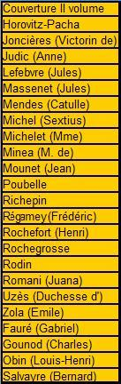
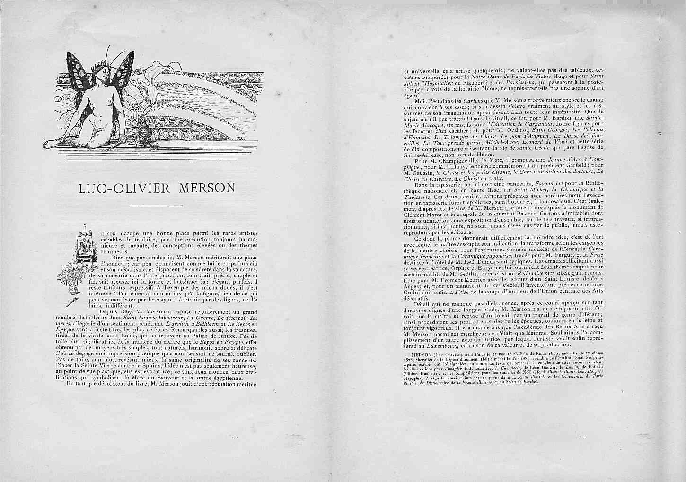
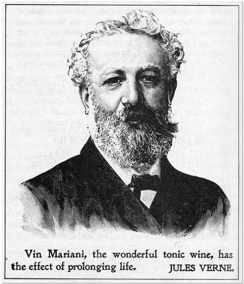
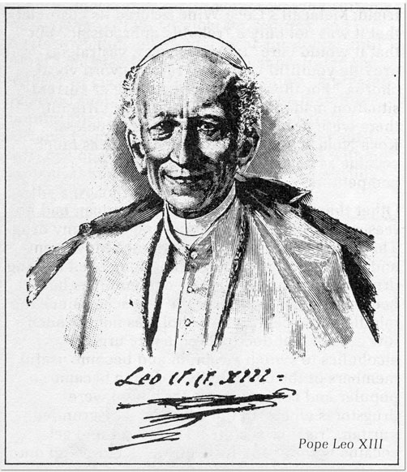
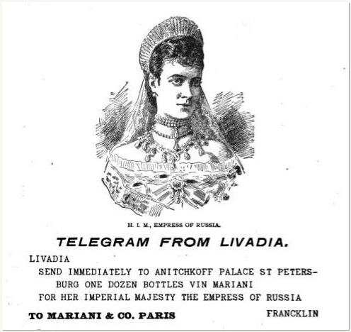
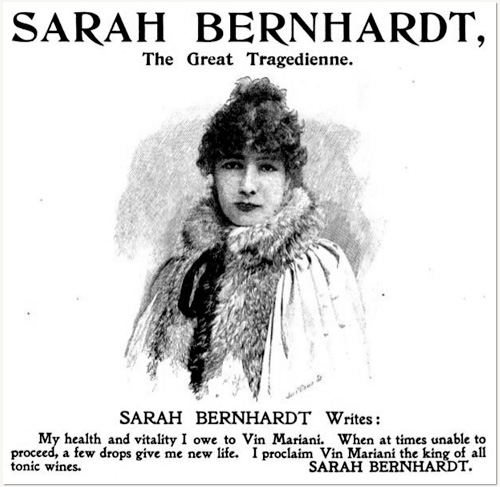

Pour obtenir les témoignages qu'il désirait, Mariani envoyait d'ordinaire une caisse de son Vin en demandant au destinataire de lui adresser une photo avec quelques lignes de sa main et sa signature. Flattés sans doute de son attention, les intéressés, le plus souvent, répondaient favorablement. Mariani supputait que la plupart remercieraient de façon expansive et, au demeurant, il n'était en rien tenu de donner suite aux éventuelles réponses négatives.
Le procédé, en tout cas, lui procura plus d'un millier de réponses utilisables, allant de Louise Abbema, l'artiste, à Emile Zola, l'écrivain, et remplissant quatorze volumes de chacun 75 à 80 notices.
Les volumes parurent régulièrement de 1891 à 1913 et un dernier, en préparation à la veille de la déclaration de guerre, fut publié par son fils en 1925. Ils furent aussi envoyés, lors de leur publication, à ceux dont on désirait le témoignage, et en retour, ils furent chaudement appréciés dans la publicité qui suivit.
Pour chaque personnalité, l'Album Mariani comporte:
|
Balayer la liste pour faire apparaître les gravures  Les petits morceaux spécialement composés ou cités par Fauré, Massenet, Joncières, Anne Judic, Gounod, Salvayre et Obin servent, dans cet ordre, de fond sonore aux pages de ce site. |

|
Quelques gravures de l'Album Mariani
Ces quatorze volumes de l'Album constituent ainsi aujourd'hui une mine de références utiles donnant sur certaines personnes des détails introuvables ailleurs.
Les appréciations des personnages les plus illustres, papes, rois et reines, sont, elles, habituellement dactylographiées par un secrétaire. N'allons pas croire que toutes ces personnes qui répondaient si chaleureusement, prenaient réellement du Vin Mariani, car leurs remerciements valaient plus souvent sans doute pour le geste que pour le produit! Mais Mariani se gardait bien de faire la distinction.

Notice des "Figures" consacrée à Luc-Olivier Merson qui a dessiné l'"Ange Mariani" qui figure dans l'en-tête de ces pages




Quelques célébrités qui ont contribué au succès du Vin Mariani:
Jules Verne, Léon XIII, la Tsarine, Sarah Bernhard

Fond sonore: "La Timbale d'argent" citée par Anna Judic